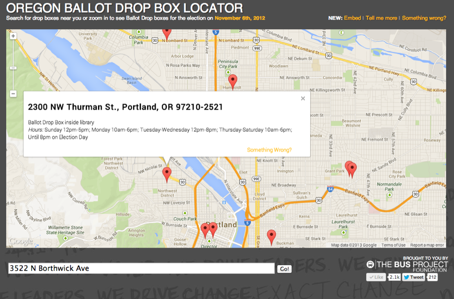
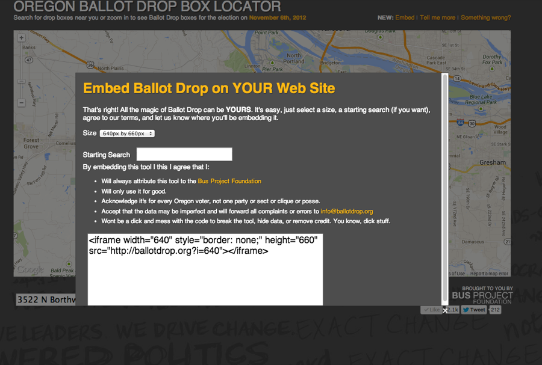
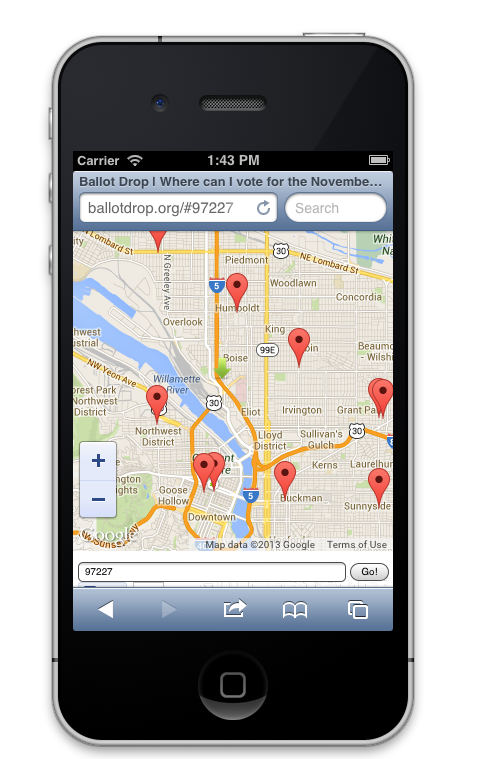

Specimen Nº 08 · Habitat I — Democracy & elections
BallotDrop
Find your nearest Oregon ballot drop box — an HTML5 webapp back when the official lookup was Flash.
- First observed
- 2013
- With
- Jeremy Sher
When It's Too late for Vote-by-Mail, with the Oregon Bus Foundation
Oregonian's are given three weeks to vote from the comfort of their own home, all they need is a stamp and a free afternoon and their civic participation is assured... but sometimes people procrastinate. And that's why there's Ballot Drop sites scattered throughout Oregon.
Unfortunately Ballot Drop boxes are sometimes not where you'd expect it - and the Secretary of State's official lookup used Flash, which made it inaccessible on phones. There also wasn't anyway to look up ballot drop sites by zip code or county, helpful tools if you were trying to educate voters over the phone or email and didn't have all of their voting information handy.
Enter BallotDrop.org, an easy, linkable, html5 webapp that uses Google Maps API and Oregon's Open Dataset to create an easy to use site for voters. Includes a mobile version which uses modern web browser geolocation to the voters location and the nearest ballot drop spot.
Plates · from the field



Field notes